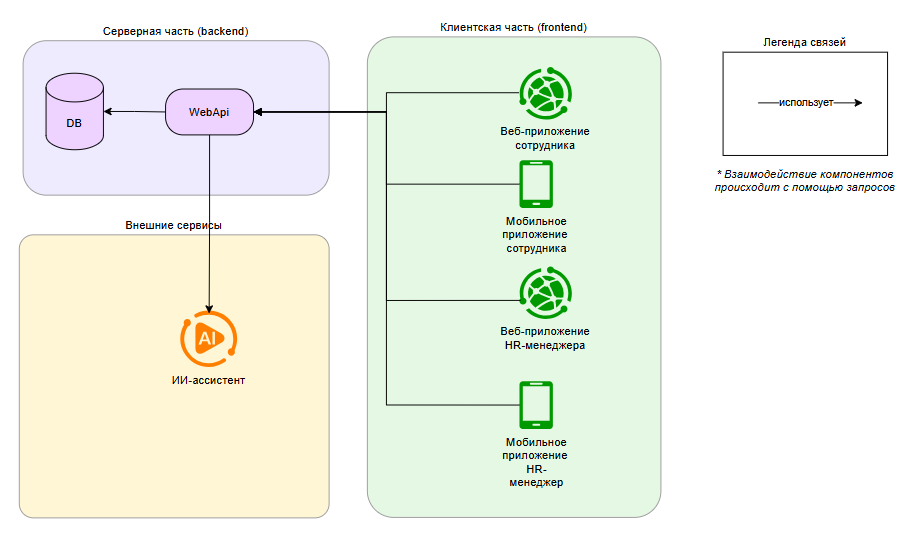
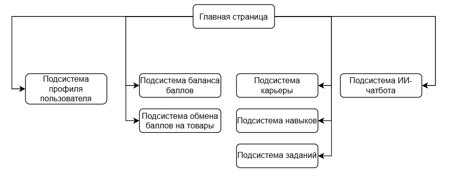

Описание системы приложения сотрудника
Архитектура программного решения представляет из себя информационную систему с базой данных, WEB-API и ИИ-ассистентом.
Для программного решения разрабатываются клиентские приложения для различных ролей:
- HR-менеджера - для регистрации сотрудников, отслеживания информации о них, внесению информации о навыках, проверка навыков сотрудников (как в автоматическом или с помощью ИИ, а так же вручную) и т.п.
- Сотрудника - для просмотра информации о карьерных треках (включая текущий), занимаемой должности, балансе бонусов, новых заданиях, общение с чат-ботом и т.п. Более подробно в описании бизнес-логики приложения сотрудника.
Описание системы (Бизнес-логика)
Приложение сотрудника предназначено для своевременного отслеживания информации о текущей позиции в организации (должность, карьера), ведение статистической информации для HR-менеджмента (профиль пользователя: резюме, навыки и т.п.). Для повышения мотивации исполнения действий в приложении, а так же интереса к карьерному росту в компании, внедряется система геймификации на основе игровых баллов, которые можно получить за некоторые значимые действия: заполнение профиля, подтверждение навыка и т.п. Потратить баллы можно во встроенном маркетплейсе так называемых товаров (могут представлять из себя различного рода скидки, подписки, сертификаты и т.п.). Так же, для отметки наиболее значимых проявлений сотрудника внедрена система ачивок (отметок об исполнении некоторых действий).
Для привлечения внимания сотрудника к приложению, а так же повышения периодичности запуска приложения, в систему внедряется дополнительная универсальная функция - todo-лист для планирования рабочего дня. Эта функция - необязательна к использованию сотрудником, однако может быть полезной, т.к. на основе этих данных можно производить более точную аналитику деятельности сотрудника.
В приложении встраивается ИИ-ассистент, который имеет возможность получить данные профиля сотрудника (различную историю событий, информацию о текущих навыках, данные профиля (портфолио, описание и т.п.)), на основе которой производится аналитика для выдачи некоторой отчётной информации (советы, информация о текущем статусе, анализ открытых вакансий и совпадение с текущими навыками и т.п.).
Приложение представляет из себя мобильное приложение, которое интегрировано в программное решение (архитектура программного решения представлена далее). 
Описание сущностей
В приложении содержатся следующие сущности:
- Сотрудник (которого добавляет HR);
- Карьера - это линейный граф, который описывает последовательность должностей (грейд) в рамках этой карьеры; у карьеры может быть список ссылок на последующие возможные карьерные пути, путь к которым открывается сотруднику по достижению последней должности (или лучше сделать список следующих карьер у должности?)
- Должность - это позиция сотрудника в организации, указывается в рамках карьерного пути; должность имеет список навыков
- Навык - это возможное умение сотрудника, которое может быть полезно в рамках работы в организации;
- Баланс - информация о текущем количестве бонусов пользователя (выдаются за различные действия в программе: подтверждение нового навыка, выполнение задания и т.п.);
- Достижение - это отметка о некотором ранее значимом действии пользователя (ачивка);
- Грейд - это псевдоним названия уровня навыка или должности (например, уровень 1 - junior); необязателен, но может помочь;
- Транзакция - это операция, влияющая на баланс бонусов пользователя;
- Журнал событий - это история событий пользователя, связанных с бизнес-процессом приложения, оформленный по шаблону;
- Товар - это некоторое вознаграждение, которое сотрудник может обменять на баллы;
- Резюме - текст резюме сотрудника
- Портфолио - набор артефактов, представляющих из себя пример результатов применения знаний и навыков, наиболее ценных как для самого сотрудника, так и могут быть полезны в организации;
- Todo-лист - это пользовательский список дел на определённую дату (добавлен для увеличения посещаемости приложения)
- Роли - список доступных в системе ролей, которые обозначают набор разрешений, прав и ограничений (у пользователя может быть несколько ролей)
- Задание - это некоторое требование, которое может быть назначено как всем сотрудникам, так и конкретному.
- Индивидуальный план развития (pipeline) - линейный граф, который описывает последовательность индивидульных целей, шаги которого указываются в свободной форме, необходимых для анализа карьерного потенциала сотрудника в компании.
Описание функций
В приложении доступны следующие функции:
- аутентификация по логину и паролю
- регистрация по токену от HR-менеджера
- просмотр баланса бонусов
- просмотр журнала транзакций счёта бонусов
- обмен бонусов на товары
- просмотр текущего карьерного статуса (карьера, должность, уровень грейда)
- просмотр текущих навыков с информацией об их сроке действия (если есть)
- подтверждение навыков
- просмотр списка карьерных треков, доступных в организации с их описанием, а так же отображением процента совпадения на основе навыков сотрудника
- Просмотр информации о значимых наградах
- Возможность выполнить задание за вознаграждение
- Заполнение информации о себе, включающей ФИО, описание, резюме, портфолио, значимые для пользователя навыки (которые не входят в список значимых для организации навыков, т.е. заполняются в свободной форме)
- Заполнение шагов индивидуального плана развития
Описание правил и ограничений
- В приложении сотрудника, пользователю доступны только те действия, которые назначены непосредственно роли “сотрудник”. Для добавления товаров, регистрации новых сотрудников и т.п. разрабатывается отдельное приложение.
- Начисление баллов может происходить в разных режимах: ручная (HR), автоматизированная (с помощью скриптов), или AI
- Получение информации системы происходит посредством доступа к WebApi
Описание подсистем приложения

Подсистема регистрация пользователя
При первом входе в приложение, пользователю-сотруднику (далее сотрудник) необходимо пройти аутентификацию с помощью специального кода, который формируется после добавления его данных закреплённым за ним менеджером HR. После чего предлагает придумать и заполнить логин и пароль для дальнейшей аутентификации. (В будущем можно дополнить приложение функцией аутентификации по биометрии).
Подсистема аутентификация пользователя
Аутентификация пользователя происходит по логину и паролю. Пользователь вводит свои логин и пароль, после чего нажимает кнопку "Войти".
При успешной аутентификации, пользователь попадает на главную страницу (активность) приложения.
При неудачной попытке пройти аутентификацию, пользователю выводится предупреждение о некорректности введённых данных. Формулировка ошибки - общая, без уточнения, какая конкретно информация была некорректна.
У пользователя есть возможность восстановить доступ к приложению, если он забыл пароль.
Восстановление пароля
В случае необходимости восстановления пароля, сотруднику необходимо ввести свой адрес электронной почты, на которую будет отправлен код для подтверждения личности и последующему доступу на страницу изменения пароля.
Главная страница
На главной странице отображаются контроллеры (кнопки, слайдеры и т.п.) верхнего уровня, которые предоставляют доступ ко всем возможным функциям приложения сотрудника. Так же, на ней отображаются наиболее часто используемые данные (такие как баланс средств, текущий грейд, несколько недавних событий с аккаунтом).
С главной страницы доступно мини-приложение TODO-листа на сегодня, который пользователь заполняет самостоятельно. На основе данных пользователя, а так же при интеграции внешнего (для разрабатываемого программного решения) сервиса (который может предоставить информацию о текущих проектах и задачах пользователя), добавляется функция автоматической генерации пунктов с помощью ИИ-ассистента.
Подсистема профиля пользователя
Подсистема профиля пользователя предназначена для отслеживания информации сотрудника о его:
- текущих навыках
- информации о себе
- резюме
- портфолио
- индивидуальный план карьерного роста (из разряда "что я хочу сделать в ближайшие n лет, чтобы достичь x)
- индивидуальные навыки (пункты добавляются сотрудником)
Подсистема баланса баллов
Подсистема баланса баллов предназначена для отслеживания текущего баланса средств баллов, а так же истории операций над ним (пополнения, списания).
Подсистема обмена баллов на товары
Подсистема обмена баллов на товары отображает список товаров, которые можно получить за баллы. Есть возможность поиска по названию, а так же фильтрация по цене и отметке "избранное". В случае, если стоимость товара превышает баланс средств, отображается количество недостающих баллов.
При нажатии на интересующий товар, открывается страница с его описанием, которая так же предоставляет возможность сразу же обменять этот товар на баллы. Можно добавить пометку "избранное" товару. Стоит учитывать, что это не торговая система: в ней не нужна система добавления товаров в корзину с учётом количества их единиц.
Подсистема карьеры
Подсистема карьеры представляет возможность просматривать текущий карьерный трек сотрудника, а так же все карьерные треки организации. Доступен поиск по названию. Можно добавить карьеру в избранное.
Для каждой карьеры можно посмотреть линейный граф, который описывает последовательность должностей карьеры (грейды).
Для каждой должности можно посмотреть информацию о списке необходимых навыков, а так же процент покрытия навыками пользователя (насколько текущие навыки пользователя совпадают с требованиями к должности). Каждый навык должности помечается в случае совпадения с одним из навыков пользователя.
Подсистема навыков
Подсистема навыков отображает список подтверждённых навыков сотрудника, а так же список доступных к подтверждению.
Списки можно фильтровать по названию. По каждому навыку можно посмотреть описание. Подтверждение навыка может быть как перманентным, так периодическим.
При просмотре информации о неподтверждённом навыке, есть возможность запросить его подтверждение. Подтверждение навыка может происходить как в автоматическом режиме (например, с помощью заранее заготовленной подпрограммы (скрипта), с помощью ИИ или вручную). Подсистема тестирования навыка не реализуется напрямую - запрос на подтверждение, в зависимости от выбранного менеджером HR способом подтверждения, перенаправляется в соответствующий сервис (например, открывается сайт с тестом или подгрузкой файлов(при этом сайт должен иметь WebAPI), или в систему заявок на ручное подтверждение).
Подсистема заданий
Подсистема заданий предназначена для отображения списка возможных к исполнению задач, за которые можно получить баллы. Задачи добавляются HR-менеджером. Подтверждение выполнения задания может происходить как по запросу сотрудника (который посчитал, что он его исполнил), так и в автоматическом режиме (например, заполнение пользовательского профиля).
Подсистема наград
Подсистема наград предназначена для отображения наград в виде изображений с наименованием. Каждая из них имеет описание (например, за какие заслуги или действия эта награда присуждается). Если награда ещё не получена - она помечается в соответствующем стиле (чёрно-белый тон, который ассоциируется с образом "не активирован"). При получении награды, её изображение становится цветным.
В подсистеме есть возможность поиска наград по названию или отметке "получена".
Если награда получена сотрудником, в подсистеме отображается дата выдачи награды.
Награду подтверждает HR-менеджер либо в ручном, либо в автоматическом виде. Сценарий может быть настроен таким образом, что награду можно получить за определённое задание.
Подсистема чата с ИИ-ассистентом
Подсистема предназначена для взаимодействия пользователя с искусственным интеллектом в виде текстового интерфейса (мессенджер) по вопросам, связанных объектами системы. Чат-бот может произвести анализ данных, которые доступны авторизованному сотруднику: как внутри системы, так и из внешних сервисов при их внедрении и доступности.
В качестве примера тематики вопросов, можно выделить следующие:
- анализ и отчёт текущего положения карьерной деятельности сотрудника
- подбор подходящих неподтверждённых навыков
- советы по формированию личных карьерных целей
- подбор подходящих карьер (с учётом доступных вакантных мест)
- советы по обновлению резюме и портфолио в связи с обновлением информации о сотруднике